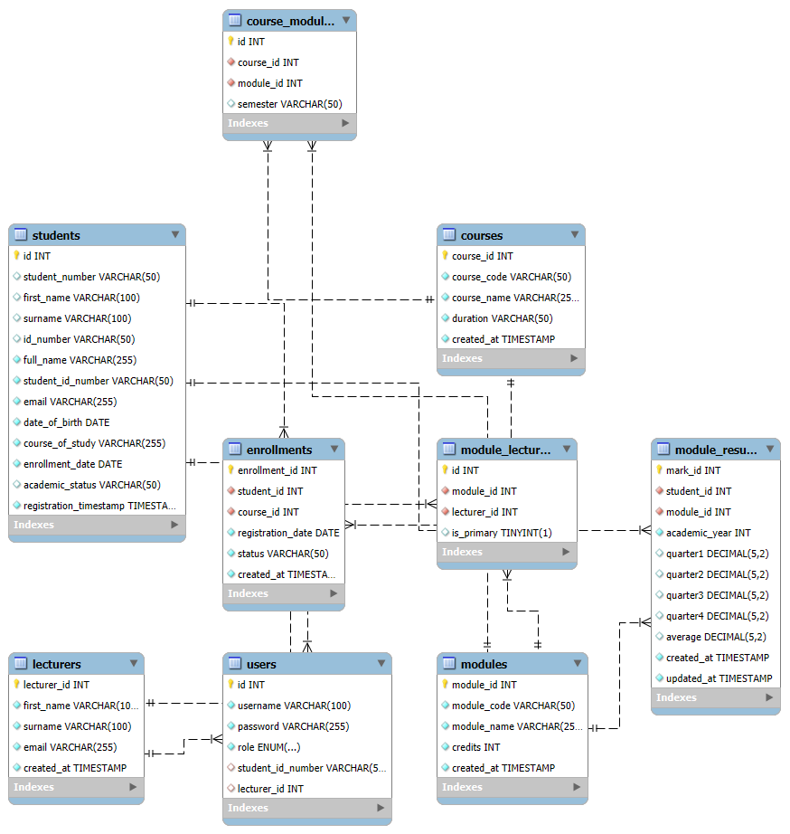
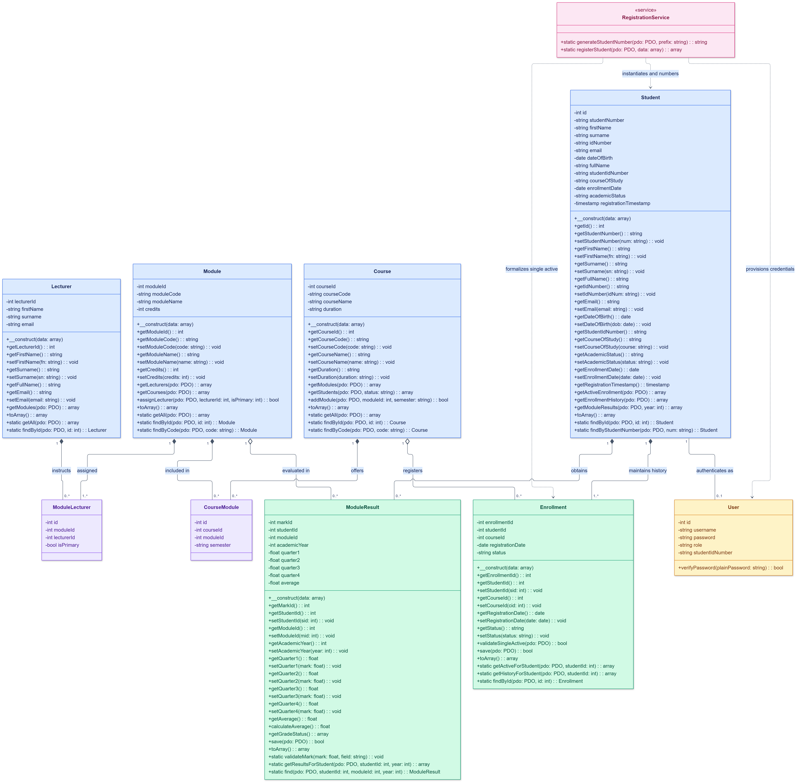

Click anywhere or press Esc to close
Academic records managed across separate spreadsheets and manual processes create:
These problems were assumed for the purpose of this prototype to demonstrate a working solution. The system was developed as an internship assessment project, not deployed into a live departmental environment.
A web-based Student Portal System that centralises academic data in a relational database, enforces business rules in PHP application logic, and provides role-based interfaces for administrators, lecturers, and students.
| Before | After |
|---|---|
| Separate spreadsheets per function | Single MySQL database with referential integrity |
| Manual mark calculation | Automated quarterly average with validation (0-100) |
| No access control | Role-based login: admin, lecturer, student |
| No enrolment rules | Business rule: one active enrolment per student |
Purpose: Develop a working web application that manages student registration, course enrolment, module assignments, quarterly marks, and academic performance tracking using object-oriented PHP and a MySQL relational database.
| ID | Requirement | Acceptance Criterion |
|---|---|---|
| FR-01 | Register a student | Creates record with unique auto-generated student number |
| FR-02 | Manage course enrolments | Only one active enrolment per student at a time |
| FR-03 | Record quarterly marks | Marks outside 0-100 are rejected |
| FR-04 | Calculate averages | Displayed average matches sum of entered quarters / count |
| FR-05 | Manage courses and modules | Courses contain modules via many-to-many relationship |
| FR-06 | Assign lecturers to modules | Lecturers see only their assigned students and marks |
| ID | Requirement | Acceptance Criterion |
|---|---|---|
| NFR-01 | Role-based access control | Users cannot access pages outside their role |
| NFR-02 | SQL injection prevention | All queries use PDO prepared statements |
| NFR-03 | Password security | Passwords stored as bcrypt hashes |
| NFR-04 | Input validation | Server-side validation on all form submissions |
| NFR-05 | Data integrity | Foreign keys enforce referential integrity in MySQL |
| Area | Finding |
|---|---|
| Technical | PHP 7.4+, MySQL 5.7+, Apache via AMPPS — all available and working on development machine |
| Operational | System usable by non-technical administrators through web forms. No specialised training required |
| Economic | Developed using existing hardware and open-source software. No additional cash expenditure |
| Schedule | Development completed within the allocated internship assessment period |
| Risk | Mitigation |
|---|---|
| Data loss | SQL schema includes seed data for restore; version-controlled on GitHub |
| SQL injection | PDO prepared statements used throughout |
| Scope creep | Feature list fixed before development started |
| Phase | Duration |
|---|---|
| Requirements and analysis | Week 1 |
| Database and UML design | Week 1-2 |
| PHP and frontend development | Weeks 2-4 |
| Testing and bug fixes | Week 4-5 |
| Documentation and presentation | Week 5-6 |
Development ran largely as planned. The main delay was in designing the many-to-many relationships between courses, modules, and lecturers.
| Item | Cost |
|---|---|
| PHP, MySQL, Apache (open source) | R0 |
| AMPPS local server | R0 (free tier) |
| InfinityFree hosting | R0 (free tier) |
| Domain name | R0 (subdomain) |
| Development hardware | Existing equipment |
| Total cash expenditure | R0 |
All development used existing equipment and free, open-source software. A low cost alone does not mean production readiness.
| Role | Person | Responsibility |
|---|---|---|
| Developer | A. Mthembu | Analysis, design, PHP implementation, testing, documentation |
| Technical mentor | ITBS staff | Guidance and review |
| Academic assessors | DFFE committee | Evaluation and feedback |
The application was developed individually. Mentors provided guidance and review but did not write code.
| Actor | Functions |
|---|---|
| Administrator | Register students, manage courses/modules, assign lecturers, manage enrolments, view all records, reset passwords |
| Lecturer | View assigned modules and students, enter/edit quarterly marks, view class performance |
| Student | View profile, view enrolled course and modules, view quarterly marks and averages, view transcript |
The relational database contains 8 tables. Junction tables course_modules and module_lecturers implement many-to-many relationships. Foreign keys enforce referential integrity with CASCADE rules. The students table maintains both normalised and legacy columns for backward compatibility.

Nine PHP classes. Entity classes (Student, Course, Module, Lecturer, Enrollment, ModuleResult) map to database tables with private attributes, getters/setters, and database interaction methods. RegistrationService contains business logic separated from entity classes. User handles authentication. Junction classes (ModuleLecturer, CourseModule) represent association tables.

Each page (e.g. admin/register_student.php) acts as both the controller and the view. It includes the relevant class files, processes form submissions, then renders HTML. Classes contain all database queries using prepared statements.
| Layer | Technology |
|---|---|
| Frontend | HTML5, CSS3, vanilla JavaScript |
| Backend | PHP 7.4+ (object-oriented) |
| Database | MySQL 5.7+ with InnoDB engine |
| Server | Apache HTTP Server (AMPPS local, InfinityFree production) |
| Authentication | PHP sessions + bcrypt password hashing |
| Version control | Git + GitHub |
university_system/
config.php -- DB connection, session start
index.php -- Login page (role-based tabs)
functions.php -- Shared utilities
classes/
Student.php -- Student entity + queries
Course.php -- Course entity + module retrieval
Module.php -- Module entity + lecturer assignment
Lecturer.php -- Lecturer entity + student queries
Enrollment.php -- Enrolment + single-active rule
ModuleResult.php -- Marks + average calculation
RegistrationService.php -- Student number + registration
User.php -- Auth + password management
admin/
dashboard.php -- Admin overview
register_student.php -- Student registration form
student_list.php -- All students
student_profile.php -- Individual student view
courses.php -- Course management
modules.php -- Module management
lecturers.php -- Lecturer list
lecturer/
dashboard.php -- Lecturer overview
students.php -- Assigned students
results.php -- Mark entry and editing
student/
dashboard.php -- Student overview
results.php -- Academic transcript
profile.php -- Personal details
database/
database.sql -- Full schema + seed dataprivate. External access goes through getters and setters onlyfindById(), getAll(), and domain-specific lookups (e.g. findByStudentNumber())beginTransaction() / commit() / rollBack() to ensure student record, user account, and enrolment are created atomicallypassword_hash() (bcrypt) and verified with password_verify()filter_var() and trim()public static function validateMark(
?float $mark, string $field = 'Mark'
): void {
if ($mark === null) return;
if ($mark < 0 || $mark > 100) {
throw new InvalidArgumentException(
"{$field} must be between 0 and 100.
Value provided: {$mark}"
);
}
}public function validateSingleActive(PDO $pdo): bool {
if (strcasecmp($this->status, 'Active') !== 0) {
return true;
}
$sql = "SELECT enrollment_id FROM enrollments
WHERE student_id = :sid
AND status = 'Active'";
// ... checks for existing active enrolment
if ($existing) {
throw new Exception(
"Student already has an active enrolment"
);
}
return true;
}public function calculateAverage(): ?float {
$marks = array_filter(
[$this->quarter1, $this->quarter2,
$this->quarter3, $this->quarter4],
fn($val) => $val !== null
);
if (count($marks) === 0) return null;
$this->average = round(
array_sum($marks) / count($marks), 2
);
return $this->average;
}The application provides three role-based interfaces. Each role sees a different dashboard and has access to different functions. The interface uses a consistent dark theme with responsive HTML/CSS. All screenshots below will be demonstrated live.
| Test | Input / Action | Expected | Result |
|---|---|---|---|
| Register valid student | All required fields, valid email, valid course | Record created, student number returned | Pass |
| Duplicate email | Email already in database | Registration rejected with error | Pass |
| Mark out of range | Quarter mark = 105 | Rejected, error message shown | Pass |
| Mark in range | Quarter mark = 82.5 | Saved, average recalculated | Pass |
| Duplicate active enrolment | Enrol student who already has active enrolment | Rejected with business rule message | Pass |
| Login with wrong password | Correct username, incorrect password | Login denied | Pass |
| Student access admin page | Student session tries /admin/dashboard.php | Redirected to own dashboard | Pass |
| Average with partial marks | Only Q1 and Q2 entered | Average of 2 marks displayed | Pass |
| SQL injection attempt | Username: ' OR 1=1 -- | Login fails, no error leak | Pass |
| Average Range | Classification | Status |
|---|---|---|
| 75 - 100 | Distinction (A) | Pass |
| 60 - 74 | Merit (B) | Pass |
| 50 - 59 | Pass (C) | Pass |
| 0 - 49 | Fail (F) | Fail |
full_name column not syncing with first_name + surname — fixed with auto-split in constructorThe following workflow will be demonstrated on the running application. Each step traces from the interface through PHP logic to the database.
| Time | Step | What to show |
|---|---|---|
| 0:00 | Login page | Role-based tabs (Admin, Student, Lecturer). Log in as admin |
| 0:45 | Admin dashboard | Overview stats. Navigate the admin interface |
| 1:30 | Register a student | Fill form, submit, show generated student number and auto-created login |
| 2:30 | Course and module structure | Show courses, their modules, and assigned lecturers |
| 3:30 | Enrolment | Show active enrolment. Attempt duplicate active enrolment to show rejection |
| 4:30 | Lecturer view | Log in as lecturer. Show assigned students and mark entry form |
| 5:30 | Student view | Log in as student. Show dashboard, marks, and transcript |
| 6:30 | Validation | Enter invalid mark (>100) to show rejection. Show database table |
| Role | Username | Password |
|---|---|---|
| Admin | admin | TheAdmin@dffe |
| Student | 10ha2304014 | Student@dffe |
| Lecturer | lecturer | Lecturer@dffe |
If the local server is unavailable, the application is also deployed at:https://student-system.infinityfree.io
students table. Normalising it while keeping old columns working required dual mappings in the Student class constructor| Improvement | Purpose |
|---|---|
| PHPUnit automated tests | Repeatable testing for business rules and edge cases |
| CSRF token protection | Prevent cross-site request forgery on form submissions |
| MVC framework migration | Separate views from controllers for better maintainability |
| REST API layer | Enable mobile clients or external system integration |
| Attendance tracking | Record and report student attendance per module |
| Audit logging | Track who changed what data and when |
| Email notifications | Notify students of registration and mark updates |
| PDF transcript export | Generate downloadable official transcripts |
These items are listed as realistic next steps based on what the current implementation does not cover. They are not planned for this assessment period.
The Student Portal System replaces fragmented, manual academic record-keeping with a centralised web application. Student records, course enrolments, module assignments, quarterly marks, and academic performance are stored in a single relational database and accessed through role-based interfaces.
| ERD | Class Diagram | |
|---|---|---|
| Perspective | Database | Application |
| Shows | Tables, columns, keys, relationships | Classes, attributes, methods, responsibilities |
| Answers | How is data stored? | How is logic organised? |
Both diagrams are consistent with each other and with the actual implementation. A database table stores data; the corresponding PHP class represents that data and contains behaviour.
This is a working internship assessment project. It demonstrates object-oriented design, relational database architecture, and full-stack PHP implementation. It is not claimed to be production-grade software.
Thank you. Questions?